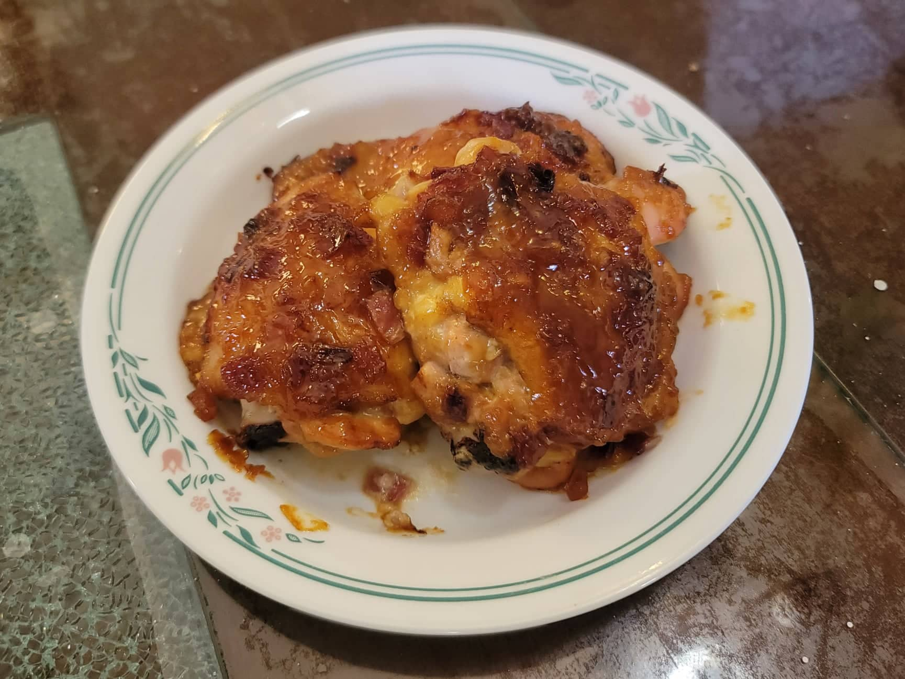

Sticky Chicken

Ingredients:
- 8 Chicken thighs or drumsticks
- 1 tbsp Olive oil
- 1 Red onion, diced
- 2 cloves Garlic, minced
- 1 Red chili, minced
- 1/2 cup Blatjang
- 1/2 cup Mayonnaise
- 1 tbsp Worcestershire sauce
- Salt, to taste
- Pepper, to taste
Instructions:
- Preheat an oven to 350 degrees Fahrenheit.
- Over medium heat in a medium sized pan, heat the olive oil. Sauté the onion, garlic, and chili until the onion is soft and translucent. Then stir in the blatjang, mayonnaise, and worcestershire sauce. Taste and adjust for salt and pepper if necessary.
- Place the chicken onto aluminum foil covered baking sheets and coat them all over with the sauce from the pan. Place into the oven and let cook for 40-45 minutes, basting with the sauce after 20 minutes.